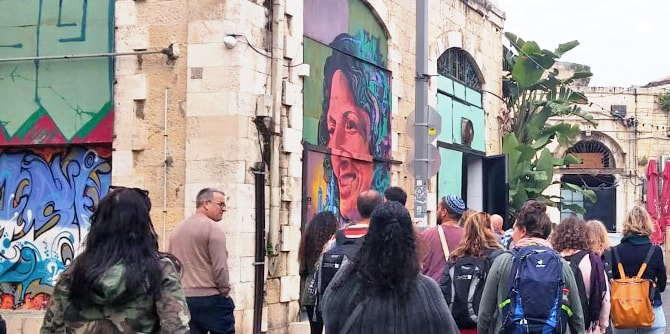

במהלך שנת הלימודים השנייה של תוכנית מנדל למנהיגות אזורית באילת-אילות, העמיתים ממשיכים להעמיק בשאלות של זהות ומקום, תוך התמקדות במקומה של מנהיגות הפועלת לחולל שינויים הבונים מרחב קהילתי-חברתי של כלל תושביו.
הריטריט עסק באתגרים של מקום ומקומיות, והעמיתים פגשו אנשי רוח ואנשי מעשה בתל-אביב וביפו במטרה לברר איך "עושים מקום", ומה הם הכוחות הפועלים והחותרים תחת הקיום הטבעי של מקום ומנסים לחולל תפיסות אחרות. הריטריט נפתח בסיור בשדרות רוטשילד בהובלתה של
ד״ר רות קלדרון, דרך מוסדות מקומיים כמו בית האופנה אתא ובתי קפה כמוסדות תרבות מקומיים. קלדרון שיתפה את העמיתים בתפיסתה הרואה בתל-אביב מקום חילוני שבו מתקיימת תרבות עברית-ישראלית ייחודית ונוחה לתושביה. בהמשך נפגשו העמיתים עם
פרופ׳ זלי גורביץ, ועמו למדו על משמעויות העומק של מקום והתפתחותו ההיסטורית של המושג – החל בתנ"ך ובמיתולוגיות וכלה במגמות מודרניות ופוסט-מודרניות.

היום השני של הריטריט התמקד במפגשים ובסיורים בחלקים הדרומיים של תל אביב – שוק לוינסקי, יפו, נווה שאנן ושכונת שפירא – שבהם ניכרות התחדשות עירונית ופעולות יזמיות חדשניות הנתפשות ככאלה המקדמות או מפריעות לתחושת המקום והמקומיות של יושביהן. הריטריט הסתיים במופע ובסדנת ספוקן-וורד עם האמן אריק אבר, שהקים את ארגון פואטרי סלאם ישראל. יחד איתו עיבדו העמיתים את חוויית הלמידה שהעיר זימנה, המהווה השראה ותשתית לחשיבה, לתכנון ולפעולה עתידית בעיר אילת ובסביבתה.
{kind=link}